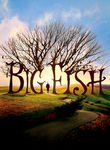

Saved Movie Tickets
I used to save movie tickets for years and years before creating this site. These are movies with dates from those tickets.
List contains: 81 items, 154.1 hours. (1 are missing runtime)
List contains: 81 items, 154.1 hours. (1 are missing runtime)
Stephen Klancher
...has seen 81
...has seen 154.1 hours

Timeline - Covers
Most Recent:
Pan's Labyrinth
...has seen 81
...has seen 154.1 hours
Timeline - Covers
Most Recent:
Pan's Labyrinth
2.

Texas: The Big Picture (2003)
5.
Spirited Away (2001) Releases on 2001-07-20
Stephen Klancher: April 6, 2003 
I watched with in a theater in Bakersfield with my mom. I don't know if it was a rerelease or late after the release or if this is all they did in Bakersfield, but I seem to remember that it was only playing on this one screen in town and it was an abnormally small one.
I really enjoyed the animation and the fantasy of the whole setting.
I really enjoyed the animation and the fantasy of the whole setting.
6.

Mystic River (2003) Releases on 2003-10-15
Stephen Klancher: January 24, 2004
I saw this with my mom when it was in theaters. I forget much of the content of the movie at this point but I remember being impressed by it.

9.
The Ice Harvest (2005) Releases on 2005-11-23
10.
Team America: World Police (2004) Releases on 2004-10-15
11.

Sky Captain and the World of Tomorrow (2004) Releases on 2004-09-17

13.

The Lost Boys (1987) Releases on 1987-07-31

15.

Tenacious D in The Pick of Destiny (2006) Releases on 2006-11-22

17.

V for Vendetta (2005) Releases on 2006-03-17
Stephen Klancher: March 17, 2006
I loved this movie. In terms of pure enjoyment coming out of the theater this ranks near the top for me. All kinds of cool.
19.

Grandma's Boy (2006) Releases on 2006-01-06
Stephen Klancher: January 6, 2006
I loved this movie. One of very few movies I went to see a second time in the theater.
20.

Star Wars: Episode III - Revenge of the Sith (2005) Releases on 2005-05-19
Stephen Klancher: May 19, 2005
I <3 Star Wars. Of course the original trilogy is better, but I still love this movie.

22.

Star Wars: Episode II - Attack of the Clones (2002) Releases on 2002-05-16
Stephen Klancher: May 17, 2002
For what it's worth, Episode II is a zillion times better than Episode I.


25.

Van Helsing (2004) Releases on 2004-05-07
Stephen Klancher: May 4, 2004
I saw this not long after having watched the anime Hellsing. I knew this wasn't related and I knew I wouldn't like it as much as the anime, but even with low expectations, this still disappointing. I seem to remember Frankenstein's monster being more interesting than most of the rest of the movie.
28.

Anchorman: The Legend of Ron Burgundy (2004) Releases on 2004-07-09
29.

Kill Bill: Vol. 1 (2003) Releases on 2003-10-10
Stephen Klancher: October 18, 2003
It was super exciting to go see this in the theater. I had watched other Tarantino movies over the previous year or two and introduced them to Brett sometime after we met. And seeing a movie like that in a theater down the street from a university makes for a fun crowd.
33.

Kill Bill: Vol. 2 (2004) Releases on 2004-04-16
34.

Big Fish (2003) Releases on 2004-01-09
Stephen Klancher: April 3, 2004
Almost more than the movie itself, I remember that after we saw this at the theater on campus at UCSD Brett and I went to Wendy's. I do remember the movie being quite fanciful, which is totally up my alley.
35.

The Lord of the Rings: The Return of the King (2003) Releases on 2003-12-17
Stephen Klancher: December 17, 2003
Probably my favorite of the trilogy, but they are all fantastic.
36.

The Phantom of the Opera (2004) Releases on 2005-01-21
37.

Sin City (2005) Releases on 2005-04-01
Stephen Klancher: April 1, 2005
Super cool style and fun characters. I read one of the graphic novels at some point too. I remember watching it a second time in Stockton in a theater on UOP campus. That was the summer I had the construction job, so it probably made having some fun on a weekend trip even more enjoyable and memorable.
38.

Turandot (1988) Releases on 1988-01-27
Stephen Klancher: February 4, 2004
I believe this is the video version I watched in my Opera class. But I am marking the date that I definitely saw the actual performance at the San Diego Opera.

40.

The Lord of the Rings: The Two Towers (2002) Releases on 2002-12-18

42.

Blade II (2002) Releases on 2002-03-22
Stephen Klancher: March 22, 2002
We watched this before going to Kat's house for my surprise 17th birthday. You would think that Nick stalling by driving around pretending he didn't remember how to get there would have tipped me off. Especially since earlier that year I thought they were planning something. But I was surprised anyway. Good times.

44.

The Matrix Reloaded (2003) Releases on 2003-05-15
Stephen Klancher: May 14, 2003
Not worthy of the original but I did like the scene with The Architect.

46.
Spirit: Stallion of the Cimarron (2002) Releases on 2002-05-24
47.

A Man Apart (2003) Releases on 2003-04-04
Stephen Klancher: April 16, 2003
When I saw this title on the ticket stub I didn't even recognize what movie it was. I very strongly remember this movie in context of the trailer and the song "Blurry". It momentarily blurred the characters on screen as Vin Diesel shouted "What if she dies?!"
48.

Pirates of the Caribbean: The Curse of the Black Pearl (2003) Releases on 2003-07-09
Stephen Klancher: July 17, 2003
I had very low expectations for this movie, but people kept telling me that it was good... I loved it! But then the second one came out and seemed so pointless that, at the moment, I still haven't seen the third one.
49.

Terminator 3: Rise of the Machines (2003) Releases on 2003-07-02
Stephen Klancher: July 5, 2003
I don't remember a ton about it, but I seem to remember liking it more than many people did. I liked the "inevitability" ending.


54.

Crank (2006) Releases on 2006-09-01

56.
Talladega Nights: The Ballad of Ricky Bobby (2006) Releases on 2006-08-04
57.

Pan's Labyrinth (2006) Releases on 2007-01-19
Stephen Klancher: January 27, 2007
This was disappointing to me because I wanted the whole movie to be like the fantasy scenes on which the trailer focused. Also "Pan's Labyrinth" became a pronouncement of intention to crush a man's face with a bottle as was done in this movie.
58.

A History of Violence (2005) Releases on 2005-09-30


62.

Doom (2005) Releases on 2005-10-21
Stephen Klancher: October 21, 2005
Met up with Casey to see this in SD. Everyone in the theater was cheering when the perspective went into first person view.

64.

The Hitchhiker's Guide to the Galaxy (2005) Releases on 2005-04-29
Stephen Klancher: May 14, 2005
Though, for me, it doesn't beat the old BBC mini series, this was still a fun version of Hitchhiker.
66.

Borat: Cultural Learnings of America for Make Benefit Glorious Nation of Kazakhstan (2006) Releases on 2006-11-03
Stephen Klancher: November 9, 2006
I did think this was funny, but I clearly did not think it was as funny as the rest of the theater.
68.

Serenity (2005) Releases on 2005-09-30
Stephen Klancher: September 30, 2005
When I moved back to SD to start school in 2005 I was told I had a week to watch some series I hadn't heard of before we would go see the movie that came out of it. So then I watched Firefly and my life was improved.
69.

A Scanner Darkly (2006) Releases on 2006-08-18
Stephen Klancher: July 24, 2006
Initially saw this in the theater with my dad and felt a little let down by it. I now think that might have been because I was watching it with him and knowing that he couldn't appreciate it.
Sometime later I rewatched the second half of this with another perspective and it was amazing.
Sometime later I rewatched the second half of this with another perspective and it was amazing.
70.
Pulse (2006) Releases on 2006-08-11
Stephen Klancher: August 22, 2006
I thought this was really creepy and clearly enjoyed it more than most people.
71.

28 Days Later... (2002) Releases on 2003-06-27
Stephen Klancher: June 27, 2003
Went for a run in the morning with my friend Nick, then we got drinks at Sonic, played GTA:Vice City, and went to see this movie.

75.

The Passion of the Christ (2004) Releases on 2004-02-25
76.
Linkin Park: Live in Texas (2003) Releases on 2003-11-17
Stephen Klancher: November 20, 2001
I am just marking this as a placeholder for the date I went to a Linkin Park concert to which I had saved the ticket.
77.

When Incubus Attacks (2002) Releases on 2002-01-01
Stephen Klancher: January 3, 2002
I am just marking this as a placeholder for the date I went to an Incubus concert to which I had saved the ticket.
78.
Cowboy Bebop: The Movie (2002) Releases on 2001-09-01
Stephen Klancher: April 10, 2003
Zeke, Bob, and I took a road trip down to Irvine to go see this at the UCI theater. I have probably never had to pee so bad as in during that car trip.